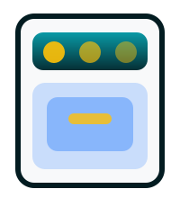

Sık Karşılaşılan Sorunlar
- Fırının ısınmaması veya dengesiz ısı
- Ocak alevinin sönmesi
- Panel tuş arızaları
- Fan motoru gürültüsü

Isıtmayan fırınlar, düzensiz pişirme yapan ankastre setler ve ocak alev problemleri için profesyonel çözümler sunuyoruz.
Fan, rezistans ve gaz hattı kontrolleri ile cihazınızın güvenli ve verimli çalışmasını sağlıyoruz.
Arıza kodlarının anlamlarını öğrenerek servis sürecini hızlandırın.
Olası Sebepler: Termostat, sensör kablosu.
Çözüm: Cihazı kapatın, sensör ölçümü için servis talep edin.
Olası Sebepler: Fan motoru sıkışması, güç kartı.
Çözüm: Fanı manuel çevirin, dönmüyorsa servis çağırın.
Olası Sebepler: Gaz vanası, termoküp.
Çözüm: Gaz hattını kontrol edin, güvenlik için uzman yönlendirin.
Ocak, fırın ve davlumbaz için yerinde servis sağlıyoruz.
Isı dağılım ölçümleri ve alev ayarı yaparak cihaz verimini artırıyoruz.
Rezistans değişimi, fan motoru onarımı ve ankastre montaj desteği sağlıyoruz.
Servis formu, garanti belgesi ve Google politikalarına uygun bilgilendirme sunuyoruz.